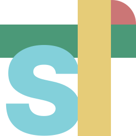

Overview
Source-driven themes for the tools this repo actually ships.
The preview reads the checked-in Metis definitions and renders the current mode. The same source writes Ghostty, iTerm2, Xcode, VSCode, Shiki, Vim, and PrismJS outputs.
- Source
definitions/metis.json- Palette
- accents, syntax roles
- Build
npm run build
Code
Token contrast
theme.ts
1const token = resolveSyntaxRole("statement");
2if (token === palette.amber) {
3 return ThemeTarget.shiki;
4}
5// One palette writes every supported editor and renderer target.
6await writeTheme({ mode: "light", targets: 8 });
added
modified
removed
renamed
Roles
Syntax mapping
Statement
keyword, storage, control
Identifier
functions, methods, symbols
Constant
properties, enums, attributes
Type
classes, structs, interfaces
String
quoted content
Number
numeric literals
Operator
punctuation, separators
Trivial
comments, inactive text
Palette
Accent values
Terminal
ANSI ramp
Ghostty / iTerm2
metis npm run build
Generated 16 artifacts from definitions/metis.json
metis npm test
ok json, plist, vim, vscode
black
red
green
yellow
blue
magenta
cyan
white
Outputs
Generated files
ghostty/metis-dark ghostty/metis-light
iterm/Metis Dark.itermcolors iterm/Metis
Light.itermcolors
xcode/Metis Dark.xccolortheme xcode/Metis
Light.xccolortheme
vscode/themes/metis-dark-color-theme.json
vscode/themes/metis-light-color-theme.json

shiki/metis-dark.json shiki/metis-light.json
colors/metis.vim autoload/airline/themes/metis.vim

prismjs/metis.css
definitions/metis.json